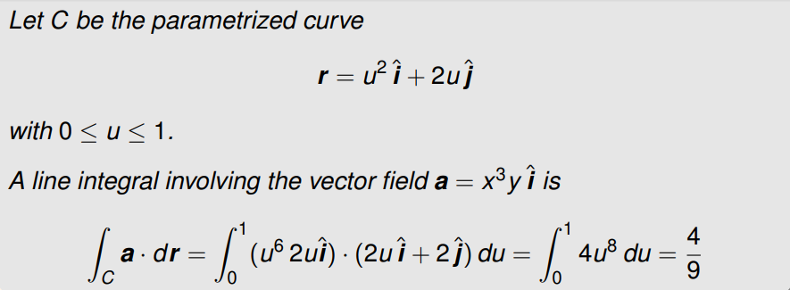

Prerequisites: vectors will be denoted as: \(\mathbf{v}\), and unit vectors: \(\mathbf{\hat{i}}\). Furthermore, \(\phi\) will mostly be used to represent a scalar field, and \(\mathbf{a}\) will be used to represent a vector field.
A parametric representation of a surface is given as: \[\mathbf{r}(u,v)=x(u,v)\mathbf{\hat{i}}+y(u,v)\mathbf{\hat{j}}+z(u,v)\mathbf{\hat{k}}\] Example: A paraboloid is given by \[\mathbf{r}(u,v)=u\cos(v)\mathbf{\hat{i}}+u\sin(v)\mathbf{\hat{j}}+u^2\mathbf{\hat{k}},\qquad0\leq u\leq 1,\quad 0\leq v\leq 2\pi\]
The infinitesimal displacement \(d\mathbf{r}\) within the surface due to an infinitesimal change in \(u\) and an infinitesimal change in \(v\) is derived from the chain rule: \[d\mathbf{r}=\frac{\partial\mathbf{r}}{\partial u}du+\frac{\partial\mathbf{r}}{\partial v}dv\] Some shorthand: The vectors \(\partial_u\mathbf{r}, \partial_v\mathbf{r}\), are tangent to the surface, where \(\partial_u\) is shorthand for \(\partial/\partial u\), and \(\partial_v\) for \(\partial/\partial v\).
The surface area is obtained by summing over the areas of a finite number of small surface elements and letting the number of elements tend to infinity. Thus \[\textrm{surface area}=\lim_{N\to\infty}\sum_N\Delta S=\int ds\] where \(dS\) is the infinitesimal scalar area element given by \[dS=|\partial_u\mathbf{r}\;du\times\partial_v\mathbf{r}\;dv|=|\partial_u\mathbf{r}\times\partial_v\mathbf{r}|\;du\;dv\] hence: \[S=\int^{u_2}_{u_1}\int^{v_2}_{u_1}|\partial_u\mathbf{r}\times\partial_v\mathbf{r}|du\;dv\]
You can expand this idea to volumes: \[\mathbf{r}(u,v,w)=x(u,v,w)\mathbf{\hat{i}}+y(u,v,w)\mathbf{\hat{j}}+z(u,v,w)\mathbf{\hat{k}}\] The infinitesimal displacement \(d\mathbf{r}\) is \[d\mathbf{r}=\frac{\partial \mathbf{r}}{\partial u}du+\frac{\partial\mathbf{r}}{\partial v}dv+\frac{\partial\mathbf{r}}{\partial w}dw\] the volume \(dV\) of the corresponding infinitesimal parallelepiped is \[dV=|\partial_u\mathbf{r}\;du\cdot(\partial_v\mathbf{r}\;dv\times\partial_w\mathbf{r}\;dw)|\] Hence, the volume of the 3D region is \[V=\int^{u_2}_{u_1}\int^{v_2}_{v_1}\int^{w_2}_{w_1}|\partial_u\mathbf{r}\cdot(\partial_v\mathbf{r}\times\partial_w\mathbf{r})|dw\;dv\;du\]
Three important operations on scalar / vector fields
So what is Nabla (\(\nabla\))? Nabla is both a vector operator and a vector: \[\nabla=\left(\frac{\partial}{\partial x},\frac{\partial}{\partial y},\frac{\partial}{\partial z}\right)\] Now, the complicated bits: \[\begin{align} \nabla\phi&=\frac{\partial\phi}{\partial x}\mathbf{\hat{i}}+\frac{\partial\phi}{\partial y}\mathbf{\hat{j}}+\frac{\partial\phi}{\partial z}\mathbf{\hat{k}}:\;\;\textrm{The gradient of $\phi$. (becomes vector field)}\\ \nabla\cdot\mathbf{a}&=\frac{\partial a_x}{\partial x}+\frac{\partial a_y}{\partial y}+\frac{\partial a_z}{\partial z}:\;\;\textrm{The divergence of $\mathbf{a}$ (becomes scalar field)}\\ \nabla\times\mathbf{a}&=\left|\begin{matrix} \mathbf{\hat{i}}&\mathbf{\hat{j}}&\mathbf{\hat{k}}\\ \partial_x&\partial_y&\partial_z\\ a_x&a_y&a_z\\ \end{matrix}\right|:\;\;\textrm{The curl of $\mathbf{a}$ (stays vector field)}\\ \end{align}\] ...as you can see, the divergence is basically the dot product of \(\nabla\) and \(\mathbf{a}\), and the curl is basically the cross product of \(\nabla\) and \(\mathbf{a}\)
...Creates a vector field from a scalar. Every point is a vector, whose direction and magnitude represents the gradients (of the scalar field) direction and magnitude. The direction corresponds to the MAXIMUM rate of change. For example: The gradient of this level surface of the scalar field: (\(\phi=y^2-x^2\))
...looks like (\(\nabla\phi=-2x\hat{i}+2y\hat{j}\)):
This tells you how much a vector field is "sourcing" or "sinking". You can imagine this like a tap or a drain in a sink. It is positive is the field is exiting a point more than it is entering, and negative if vice versa. I will only visualise the field here (in 2D) as I do not have time to do it in 3D. Example for the field \(\mathbf{a}=x\mathbf{\hat{i}}+y\mathbf{\hat{j}}\):
\[\nabla\cdot\mathbf{a}=1+1=2\gt 0\] hence this field has a divergence of 2 everywhere, i.e. the field is exiting more than entering at all points. Note: A field is solenoidal over a region if the divergence at all point in that region is 0.
This tells you how much a vector field is rotating around a point. It is more of a 3D idea, but it is hard to plot so I will simplify to 2D. The curl (like the cross product) in 2D exists only in the \(\hat{k}\) direction. In 3D this is not true. Example for the field \(\mathbf{a}=-y\mathbf{\hat{i}}+x\mathbf{\hat{j}}\):
\[\nabla\times\mathbf{a}=1-(-1)=2\gt 0\] Note: A field is irrotational over a region if the curl at all point in that region is 0.
Considering that the various operations involving \(\nabla\) are just specific cases of first-order partial differentiation with respect to \(x\), \(y\), \(z\), it is unsurprising that \(\nabla\) has similar properties to its 1D counterpart \(d/dx\) . \(\nabla\) is distributive: \[\begin{align} \nabla(\phi+\psi)&=\nabla\phi+\nabla\psi\\ \nabla\cdot(\mathbf{a}+\mathbf{b})&=\nabla\cdot\mathbf{a}+\nabla\cdot\mathbf{a}\\ \nabla\times(\mathbf{a}+\mathbf{b})&=\nabla\times\mathbf{a}+\nabla\times\mathbf{a}\\ \end{align}\] ...and satisfies the product rule: \[\begin{align} \nabla(\phi\psi)&=(\nabla\phi)\psi+\phi(\nabla\psi)\\ \nabla\cdot(\phi\mathbf{a})&=(\nabla\phi)\cdot\mathbf{a}+\phi(\nabla\cdot\mathbf{a})\\ \nabla\times(\phi\mathbf{a})&=(\nabla\phi)\times\mathbf{a}+\phi(\nabla\times\mathbf{a})\\ \end{align}\] A bit of thought also reveals that \(\nabla\) satisfies the chain rule when acting on a scalar field \(f(\psi)\) that has been expressed as a function of the scalar field \(\psi\): \[\nabla\left[f(\psi)\right]=\frac{df}{d\psi}\nabla\psi\] Second Order Two very important identites: \[\begin{align} \nabla\times(\nabla\phi)&=0\\ \nabla\cdot(\nabla\times\mathbf{a})&=0\\ \end{align}\]
The Laplacian acts differently on scalar and vector fields. Its action on scalar fields is defined as: \[\nabla^2\phi=\nabla\cdot(\nabla\phi)\] The action of the Laplacian on vector fields is more subtle. It is defined as follows: \[\nabla^2\mathbf{a}=\nabla(\nabla\cdot\mathbf{a})-\nabla\times(\nabla\times\mathbf{a})\]
A level surface is where we set a scalar field to be constant. I.e.: \[\phi(x,y,z)=c\] Geometrically, this surface sits within the field, and is just a collection of all of the points where the field is equal to \(c\). A normal to the level surface is obtained by working out \(\nabla\phi\) at the level surface \(\phi(x,y,z)=c\). We write this as \[\left.\mathbf{n}=\nabla\phi\right|_{\phi=c}\] to remind us that \(\mathbf{n}\) lives on on the level surface
If we express this level surface parametrically, (\(\mathbf{r}(u,v)\)), then we can say that the normal must be \(\partial_u\mathbf{r}\times\partial_v\mathbf{r}\). Hence the identity: \[\partial_u\mathbf{r}\times\partial_v\mathbf{r}=\lambda\mathbf{n}\] where \(\lambda\) is some function of \(u\) and \(v\) and \(\left.\mathbf{n}=\nabla\phi\right|_{\phi=c}\).
When you express \(x,\;y,\;z\) in terms of \(u_1,\;u_2,\;u_3\) such that: \[x=x(u_1,u_2,u_3),\quad y=y(u_1,u_2,u_3),\quad z=z(u_1,u_2,u_3)...\]
There are the two known examples of cylindrical and spherical polar coordinates. For cylindrical coordinates, you have: \[\begin{align} x=&r\cos(\phi)\\ y=&r\sin(\phi)\\ z=&z \end{align}\] and for spherical: \[\begin{align} x=&\rho\sin(\theta)\cos(\phi)\\ y=&\rho\sin(\theta)\sin(\phi)\\ z=&\rho\cos(\theta) \end{align}\] an easy way to remember spherical coordinates is to use cylindrical coordinates and the fact that \(\rho=r\sin(\theta)\)
There are two methods to construct a vector basis from curvilinear coordinates (\(u_1,\;u_2,\;u_3\)). Tangents to coordinate curves, or normals to coordinate surfaces.
If you imagine fixing all but one of your parameters that make up your coordinate system, and plot a curve as you vary the unfixed parameter, the tangent to this curve will form a base for the vector field. Repeat this through your parameters and you have a basis: \[\mathbf{e}_1=\frac{\partial\mathbf{r}}{\partial u_1},\quad\mathbf{e}_2=\frac{\partial\mathbf{r}}{\partial u_2},\quad\mathbf{e}_3=\frac{\partial\mathbf{r}}{\partial u_3}\] where \(\mathbf{r}=x\mathbf{\hat{i}}+y\mathbf{\hat{j}}+z\mathbf{\hat{k}}\) It is sometimes important to normalise these, such that their lengths are \(1\). To find the normalised basis (\(\mathbf{\hat{e}}_1\)), we simply compute: \[\mathbf{\hat{e}}_1=\frac{\mathbf{e}_1}{|\mathbf{e}_1|}\] Example: Cylindrical Polar Coordinates \[\mathbf{r}(\rho,\phi,z)=\rho\cos(\phi)\mathbf{\hat{i}}+\rho\sin(\phi)\mathbf{\hat{j}}+z\mathbf{\hat{k}}\] We can obtain: \[\begin{align} \mathbf{e}_\rho&=\partial_\rho\mathbf{r}=\cos(\phi)\mathbf{\hat{i}}+\sin(\phi)\mathbf{\hat{j}}\\ \mathbf{e}_\phi&=\partial_\phi\mathbf{r}=-\rho\sin(\phi)\mathbf{\hat{i}}+\rho\cos(\phi)\mathbf{\hat{j}}\\ \mathbf{e}_z&=\partial_z\mathbf{r}=\mathbf{\hat{k}}\\ \end{align}\] then \[\begin{align} \mathbf{\hat{e}}_\rho&=\cos(\phi)\mathbf{\hat{i}}+\sin(\phi)\mathbf{\hat{j}}\\ \mathbf{\hat{e}}_\phi&=-\sin(\phi)\mathbf{\hat{i}}+\cos(\phi)\mathbf{\hat{j}}\\ \mathbf{\hat{e}}_z&=\mathbf{\hat{k}}\\ \end{align}\]
First, consider the inverse transformation: \[u_1=u_1(x,y,z),\quad u_2=u_2(x,y,z),\quad u_3=u_3(x,y,z)\] Setting \(u_1\), \(u_2\) or \(u_3\) to constants will yield three level surfaces. This leads to the basis \(\epsilon_1, \epsilon_2, \epsilon_3\) given by: \[\epsilon_1=\nabla u_1,\quad \epsilon_1=\nabla u_2,\quad \epsilon_1=\nabla u_3,\quad\] It is sometimes important to normalise these, such that their lengths are 1. To find the normalised basis (\(\mathbf{\hat{\epsilon}}_1\)), we simply compute: \[\mathbf{\hat{\epsilon}}_1=\frac{\epsilon_1}{|\epsilon_1|}\] The unit bases from both methods are not always the same. They are only equivalent when the coordinate curves intersect at right angles, i.e. the basis \(\mathbf{e}_1,\mathbf{e}_2,\mathbf{e}_3\) is orthogonal. We call such coordinate systems orthogonal and Cartesian coordinates, cylindrical polar coordinates and spherical polar coordinates are examples of orthogonal coordinate systems.
Since \[\frac{\partial\phi}{\partial u_1}=\frac{\partial\phi}{\partial x}\frac{\partial x}{\partial u_1}+\frac{\partial\phi}{\partial y}\frac{\partial y}{\partial u_1}+\frac{\partial\phi}{\partial z}\frac{\partial z}{\partial u_1}\] using the chain rule, it follows that \[\frac{\partial\phi}{\partial u_1}=\frac{\partial\mathbf{r}}{\partial u_1}\cdot\nabla\phi\] with more manipulation (and an identity) \[\nabla\phi=\frac{1}{h_1}\frac{\partial\phi}{\partial u_1}\mathbf{\hat{e}}_1+\frac{1}{h_2}\frac{\partial\phi}{\partial u_2}\mathbf{\hat{e}}_2+\frac{1}{h_3}\frac{\partial\phi}{\partial u_3}\mathbf{\hat{e}}_3\] where \(h_n\) is the scale factor \(|\mathbf{e_n}|\)
We do not need to remember the derivation, so I shall just state them: Cylindrical Polar Coordinates: \[\nabla\cdot\mathbf{a}=\frac{1}{\rho}\frac{\partial(\rho a_\rho)}{\partial\rho}+\frac{1}{\rho}\frac{\partial a_\phi}{\partial\phi}+\frac{\partial a_z}{\partial z}\] Spherical Polar Coordinates: \[\nabla\cdot\mathbf{a}=\frac{1}{\rho^2}\frac{\partial(\rho^2 a_\rho)}{\partial\rho}+\frac{1}{\rho\sin(\phi)}\frac{\partial\sin(\phi)a_\theta}{\partial \theta}+\frac{1}{\rho\sin(\phi)}\frac{\partial a_\phi}{\partial\phi}\]
We do not need to remember the derivation, so I shall just state them: Cylindrical Polar Coordinates: \[\nabla\times\mathbf{a}=\frac{1}{\rho}\left|\begin{matrix} \mathbf{\hat{e}}_\rho&\rho\mathbf{\hat{e}}_\phi&\mathbf{\hat{e}}_z\\ \partial_\rho&\partial_\phi&\partial_z\\ a_\rho&\rho a_\phi&a_z \end{matrix}\right|\] Spherical Polar Coordinates: \[\nabla\times\mathbf{a}=\frac{1}{\rho^2\sin(\theta)}\left|\begin{matrix} \mathbf{\hat{e}}_\rho&\rho\mathbf{\hat{e}}_\theta&\rho\sin(\theta)\mathbf{\hat{e}}_\phi\\ \partial_\rho&\partial_\theta&\partial_\phi\\ a_\rho&\rho a_\theta&\rho\sin(\theta)a_\phi \end{matrix}\right|\]
In practice, a good way to evaluate such integrals is to introduce a parametric form \(r=r(u)\) for \(C\): \[\begin{align} \int_C\phi\;d\mathbf{r}&=\int^{u_2}_{u_1}\phi(\mathbf{r}=\mathbf{r}(u))\frac{d\mathbf{r}}{du}du\\ \int_C\mathbf{a}\cdot d\mathbf{r}&=\int^{u_2}_{u_1}\mathbf{a}(\mathbf{r}=\mathbf{r}(u))\cdot\frac{d\mathbf{r}}{du}du\\ \int_C\mathbf{a}\times d\mathbf{r}&=\int^{u_2}_{u_1}\mathbf{a}(\mathbf{r}=\mathbf{r}(u))\times\frac{d\mathbf{r}}{du}du\\ \end{align}\] Example:

Quick Note: we always traverse boundaries with the surface/volume/area to our left. Green's theorem is essentially a 2D stokes theorem. It tells us that the total amount of field in line with the boundary \(C\), is equal to the sum of the curl of the field over the entire area. \[\boxed{\oint_C\left(P\;dx+Q\;dy\right)=\iint_R\left(\frac{\partial Q}{\partial x}-\frac{\partial P}{\partial y}\right)\;dxdy}\] ...or in more general form: \[\oint_C\mathbf{a}\cdot d\mathbf{r}=\iint_R(\nabla\times\mathbf{a})\; dA\] where \(\mathbf{a}=P(x,y)\mathbf{\hat{i}}+Q(x,y)\mathbf{\hat{j}}\)
Pretty much the same as line integrals. Remember that: \[d\mathbf{S}=\mathbf{\hat{n}}\;dS\] and \[dS=|\partial_u\mathbf{r}\times\partial_v\mathbf{r}|du\;dv\] hence \[d\mathbf{S}=\partial_u\mathbf{r}\times\partial_v\mathbf{r}\;du\;dv\]
The volume \(dV\) of the parallelepiped formed by the infinitesimal displacements \(\mathbf{e_1}du_1,\;\mathbf{e_2}du_2,\;\mathbf{e_3}du_3\) is \[dV=|\mathbf{e}_1\cdot(\mathbf{e}_2\times\mathbf{e}_3)|du_1\;du_2\;du_3\] ...Which the elegant way of writing is: \[dV=\left|\begin{matrix} \frac{\partial x}{\partial u_1}&\frac{\partial y}{\partial u_1}&\frac{\partial z}{\partial u_1}\\ \frac{\partial x}{\partial u_2}&\frac{\partial y}{\partial u_2}&\frac{\partial z}{\partial u_2}\\ \frac{\partial x}{\partial u_3}&\frac{\partial y}{\partial u_3}&\frac{\partial z}{\partial u_3}\\ \end{matrix}\right| du_1\;du_2\;du_3\] for \(\mathbf{r}(u_1,u_2,u_3)=x(u_1,u_2,u_3)\mathbf{\hat{i}}+y(u_1,u_2,u_3)\mathbf{\hat{j}}+z(u_1,u_2,u_3)\mathbf{\hat{k}}\)
The Jacobian is part of that expression above. Specifically: \[J=|\mathbf{e}_1\cdot(\mathbf{e}_2\times\mathbf{e}_3)|=\left|\begin{matrix} \frac{\partial x}{\partial u_1}&\frac{\partial y}{\partial u_1}&\frac{\partial z}{\partial u_1}\\ \frac{\partial x}{\partial u_2}&\frac{\partial y}{\partial u_2}&\frac{\partial z}{\partial u_2}\\ \frac{\partial x}{\partial u_3}&\frac{\partial y}{\partial u_3}&\frac{\partial z}{\partial u_3}\\ \end{matrix}\right|\] Hence, in curvilinear coordinates: \[\iiint_VdV=\iiint_VJ\;du_1du_2du_3\] The Jacobian is commonly denoted: \[J=\frac{\partial (x,y,z)}{\partial (u_1,u_2,u_3)}\] Note that the volume element \(dV\) has a particularly simple form when expressed in orthogonal curvilinear coordinates. The scale factors \(h_1,\;h_2,\;h_3\) satisfy: \[\mathbf{e}_1=h_1\mathbf{\hat{e}}_1,\quad\mathbf{e}_2=h_2\mathbf{\hat{e}}_2,\quad\mathbf{e}_3=h_3\mathbf{\hat{e}}_3\] therefore for orthogonal curvilinear coordinates ONLY: \[J=h_1h_2h_3\]
This theorem basically says: The flux of a field through a closed surface, is equal to the divergence of the field within the volume bound by the surface.
More simply: Net flow out of region = Sum of sources in region. \[\boxed{\iiint_V\nabla\cdot\mathbf{a}\;dV=\oint_S\mathbf{a}\cdot d\mathbf{S}}\]
A more general form of Green's theorem. The total field in line with the boundary \(C\), is equal to the flux of the curl of the field through surface. \[\boxed{\oint_C\mathbf{a}\cdot d\mathbf{r}=\iint_S(\nabla\times\mathbf{a})\cdot d\mathbf{S}}\] The direction of \(C\) is that the surface is on the left. The direction of \(dS\) is normal to the surface \(S\). Specifically, the direction of \(dS\) is the cross product of the direction of \(C\) and a tangent to \(S\).